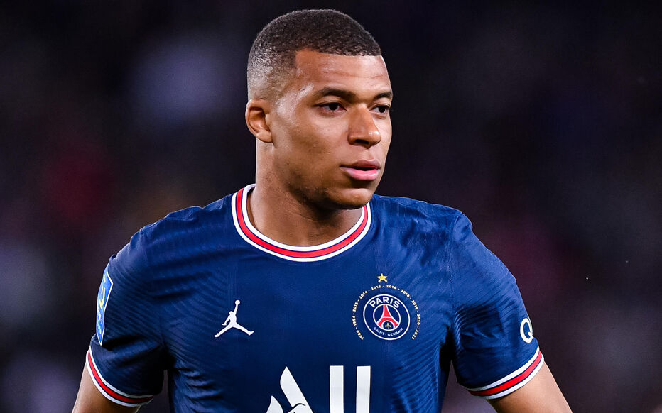
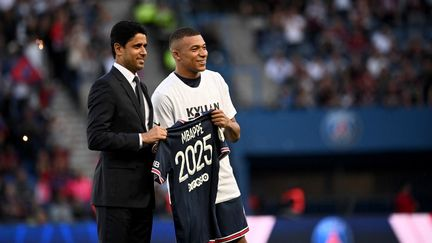

Tất cả là do lỗi của Presnel Kimpembe. Anh ta là nguồn cơn của tất cả mọi chuyện. Chàng hậu vệ tới từ Beaumont-sur-Oise là người đã gây ra những tràng cười không ngớt ở những hàng ghế cuối của chiếc xe bus chở đội. Vẻ ngoài - tóc đen, cắt cua, hai tai lúc nào cũng chụp một đôi headphone tổ chảng - và thái độ thân thiện của Kimpembe khiến người khác khó mà không quý anh được. Kimpembe chính là người đầu tiên gọi Mbappé với biệt danh Donatello, theo tên một nhân vật trong serie truyện tranh Teenage Mutant Ninja Turtles [ở Việt Nam vẫn được biết đến dưới tên gọi “Ninja Rùa” - N.D] được Mirage Studios xuất bản từ năm 1984, và từng được chuyển thể thành nhiều bộ phim hoạt hình và phim điện ảnh. Trong bộ tứ Ninja Rùa (ngoài Donatello còn có Michelangelo, Raphael và Leonardo), Donatello là nhân vật mang mặt nạ tím, có sở trường sử dụng bo¯ (một loại võ cụ bằng gỗ thường thấy trong jiu-jitsu, môn võ Nhật Bản). Và như nhiều người, Donatello bị nghiền pizza, có thể ăn suốt ngày đêm.
Sau Kimpembe, tất cả các cầu thủ khác trong đội, từ Dani Alves tới Neymar, đều gọi Kylian với biệt danh mới. Đội trưởng Thiago Silva sau đó vài ngày còn chơi khăm Kylian khi tặng anh một hộp Dior đắt tiền, nhưng bên trong lại chứa một chiếc mặt nạ màu tím.
“Lễ đặt tên mới” cho Kylian diễn ra chỉ vài ngày sau khi anh gia nhập PSG. “Chúng tôi đặt cho anh ấy biệt danh đó bởi vì anh ấy trông khá giống một chú rùa,” Adrien Rabiot giải thích. “Tất nhiên chỉ là gọi vui thôi, nên anh ấy dễ dàng chấp nhận nó,” cầu thủ mang áo số 25 của Paris Saint-Germain nói thêm. Thành thật mà nói, Mbappé không thực sự thích biệt danh mà các đồng đội mới đặt cho, nhưng anh vẫn vui vẻ đón nhận nó: “Biệt danh ấy khiến tôi thấy buồn cười. Nhưng đó là một dấu hiệu tốt của tình bạn, và nó còn có tác dụng giúp xua đi những căng thẳng trong phòng thay đồ trong các trận đấu.”
7/9 là ngày diễn ra trận đấu thuộc Ligue 1 giữa PSG với Metz. Đó cũng là trận ra mắt của Kylian trong màu áo Paris Saint-Germain. Bữa tối trước khi trận đấu diễn ra bắt đầu trong không khí ồn ào, náo nhiệt được tạo nên bởi những tiếng hô “Donatello! Donatello!” và tiếng gõ ly không ngớt. Trên màn hình phía sau bàn ăn đang chiếu một trận bóng ném. Nhưng dường như chẳng ai quan tâm. Họ đang mải hò hét yêu cầu Donatello phát biểu. Đó là một màn ra mắt theo truyền thống của câu lạc bộ mà tất cả mọi thành viên mới của phòng thay đồ đều phải thực hiện. Kiểu “nghi thức” thường thấy trong lễ chào đón tân binh ở những doanh trại quân đội hay sinh viên mới ở các trường đại học ấy vẫn được thực hành trong phần lớn các đội bóng ở Pháp (và một vài nơi khác).
Được các đồng đội kích động, Kylian, lúc đó đang vận một chiếc áo khoác thể thao màu đỏ có logo PSG, đứng lên một chiếc ghế ở cuối bàn, tay cầm một chiếc chai giả làm micro: “Xin được tự giới thiệu, tên tôi là Kylian. Tôi 18 tuổi, và tôi là một cầu thủ mới.” Sau đó tới phần thử tài ca hát. Số 29 mới của PSG chọn biểu diễn bài C’est plus l’heure, một nhạc phẩm được Mr Franglish biểu diễn cùng Dadju và Vegeta. Đấy cũng là bài hát mà Mbappé đã chọn để hát trong lễ ra mắt đội tuyển Pháp. Tới lúc này thì anh gần như đã là dân chuyên nghiệp rồi! Anh hát đoạn điệp khúc, không một chút vấp váp:
Après l’heure, c’est plus l’heure J’ai demandé ta main
Tu me l’as pas donnée (oh oh ah) Grosse erreur
J’aurai pu devenir l’homme qui t’a tout donné
(Chả có lúc nào gọi là đúng lúc cả/ Anh xin được nắm tay em, mà em lại không cho (oh oh ah)/ Thật là một sai lầm lớn/ Anh đã có thể là người đàn ông sẽ mang lại cho em mọi thứ).

.Nhưng tốt nhất vẫn không nên nói nhiều về giọng hát của Kylian! Ai mà biết Mr Franglish, một rapper xuất thân từ khu 20, sẽ nói gì về nó! Những biểu hiện và nét mặt của Dani Alves cho thấy có vẻ như anh không đánh giá cao màn trình diễn của người đồng đội trẻ lắm. Dẫu vậy thì chàng tân binh vẫn nhận được những tràng pháo tay và vỗ bàn tán thưởng. Cầu thủ người Italia, Marco Verratti, tỏ ra rất thích thú với màn trình diễn đó nên đã ghi lại bằng điện thoại và đăng lên Twitter vào lúc 9 giờ 46 phút tối. Cùng thời điểm đó của ngày hôm sau, ngày 8/9/2017, người ta đang bàn tán về một màn trình diễn khác còn ấn tượng hơn nhiều của Kylian, màn trình diễn trên sân Stade Saint-Symphorien. Điều tuyệt vời nhất vẫn còn ở phía trước.
Vào lúc 8 giờ 5 phút, anh bước ra từ đường hầm trong những tiếng huýt sáo của các cổ động viên chủ nhà. Mang áo khoác thể thao màu xanh và quần short vàng, Kylian bước trước, và theo sau là Neymar Junior. Ngài 222 triệu euro vừa mới hạ cánh xuống nước Pháp hôm thứ Tư, sau khi hoàn thành nghĩa vụ quốc gia với đội tuyển Brazil trong hai trận đấu với Ecuador và Colombia. Cho tới tận phút cuối thì khả năng đá chính của Neymar vẫn còn bị bỏ ngỏ, nhưng cuối cùng thì anh cũng có thể góp mặt trong đội hình xuất phát. Không lâu trước khi trận đấu diễn ra, anh đăng lên mạng một tấm hình chụp chung với Kylian trên đường băng ở sân bay. Chàng trai tới từ Bondy, tai vẫn chụp headphone, cười tươi và chỉ vào người đồng đội nổi tiếng, trong khi Ney thì giơ tay làm biểu tượng shaka. Giữa họ có vẻ đã hình thành một sợi dây liên kết. Và điều đó sẽ trở nên rõ ràng hơn khi trận đấu diễn ra.
Trở lại sân, số 29 của PSG đang khởi động cùng bóng bên các đồng đội. Anh chưa có nhiều thời gian tập trung với họ. Từ khi đến thủ đô nước Pháp tới nay mới chỉ được chưa đầy 6 ngày. Anh cũng chỉ mới có một hay hai lần gì đó được đứng chung sân tập với Neymar và Cavani, những đối tác mới trên hàng công, do hai ngôi sao Nam Mỹ cũng bận tập trung đội tuyển. Trong những hoàn cảnh như thế này thì phải đặt niềm tin vào bản năng thôi. Về phần Kylian, không khó để hình dung ra áp lực khủng khiếp và cả sự phấn khích mà chàng tân binh trị giá 180 triệu euro này cảm nhận trước trận đấu đầu tiên với đội bóng thành Paris. Anh biết là màn trình diễn của mình sẽ bị soi dưới kính hiển vi. Người ta sẽ mổ xẻ từng phút, từng động tác, từng chi tiết kỹ thuật một, sẽ không bỏ qua số kilometre mà anh đã chạy, số đường chuyền thành công cũng như không thành công, số lần rê bóng, số cú sút trúng đích cũng như không trúng đích của anh. Tất cả, từ các chuyên gia tới các cổ động viên, sẽ cố gắng tìm hiểu xem liệu chàng trai 18 tuổi có xứng đáng với mức giá chuyển nhượng khổng lồ của anh hay không, liệu anh có thể sánh ngang được với số 10 (Neymar) và “El Matador” (Cavani) hay không. Nhưng tất cả những điều đó không thể khiến quyết tâm của Kylian bị suy chuyển. Anh luôn là người biết mình cần gì. “Tôi tự nói với bản thân rằng tôi sẽ phải tạo được ấn tượng ngay trong trận đấu đầu tiên. Và đó là điều mà tôi đã làm được. Điều quan trọng là phải hòa nhập thật nhanh với những người xung quanh,” anh tâm sự với France Football sau trận đấu vài tháng.
Trận đấu thuộc vòng 4 Ligue 1 mùa giải mới giữa Metz và PSG bắt đầu vào lúc 8 giờ 45. Unai Emery đã tung ra sân một hàng tấn công bằng vàng ròng. Edinson Cavani, người mới trở lại từ Uruguay vào ngày hôm trước, chơi ở vị trí mũi nhọn, bên phải của anh là Kylian Mbappé và bên trái là Neymar. Đó là màn ra mắt của bộ ba tấn công có tổng trị giá lên tới 466 triệu euro. Đấy là còn chưa nói tới 45 triệu euro được trả cho Julian Draxler, cầu thủ người Đức chơi ở ngay phía sau họ.
Đối thủ của những người Paris tối hôm đó vẫn chưa thắng trận nào ở Ligue 1 và đang đứng đội sổ trên bảng xếp hạng. Ký ức về cú hat-trick lập được vào lưới Metz trong màu áo Monaco ở mùa giải trước vẫn còn rõ mồn một trong trí nhớ của Kylian.
Vào chỗ, chuẩn bị, xuất phát! Kylian nhập cuộc đầy hứng khởi. Chỉ sau 3 phút, đã thấy anh nhảy múa cạnh đường biên bên hành lang trái, cố gắng vượt qua hai cầu thủ đối phương trước khi bị người mang áo số 25 phạm lỗi.
Phút thứ sáu, anh và Neymar thực hiện một serie những pha phối hợp 1-2 ở trước vòng cấm, nhưng rất tiếc là đường chuyền quyết định lại bị đối phương chặn được. Tới phút 14, lại có thêm một pha phối hợp ấn tượng và cực nhanh giữa ngôi sao người Pháp và ngôi sao người Brazil. Đó chỉ là khởi đầu cho một serie những pha phối hợp nhỏ giữa họ. Chưa có pha phối hợp nào mang lại kết quả, nhưng thế cũng đủ khiến hàng thủ đối phương khốn đốn. Neymar và Mbappé thường xuyên tìm thấy nhau trên sân. Vào thời điểm trận đấu kết thúc, họ đã tung ra tổng cộng 36 đường chuyền qua lại. Đó là bộ đôi ăn ý nhất ở trên sân. Một dấu hiệu tốt cho tương lai.
Trở lại với trận đấu. Bàn thắng được chờ đợi cuối cùng cũng đến ở phút 31. Neymar chọc khe, cả Mbappé và Cavani cùng lao xuống. Cả hai cùng có cơ hội dứt điểm. Nhưng Mbappé đã thể hiện sự tôn trọng thứ bậc trong đội bằng cách chủ động nhường lại vinh quang cho người đàn anh đến từ Uruguay, người đã rê qua cả thủ môn trước khi sút tung lưới trống bằng chân trái. Đó là pha lập công thứ bảy từ đầu mùa của El Matador. Ngay sau khi bật dậy, anh đã ôm chầm lấy chàng tân binh để cảm ơn. Tới phút 33, Kylian lại có một pha đánh gót cực kỳ thuận lợi cho Cavani, tiếc là cú sút cuối cùng lại không thắng được Kawashima, thủ môn của Metz. Kylian không bỏ cuộc. Một phút sau, anh có pha solo dọc biên trái rồi tung ra một quả tạt hoàn hảo bằng má ngoài chân phải nhắm tới cái đầu của Cavani. Tiền đạo người Uruguay thoải mái đánh đầu trong tư thế không có ai kèm. Khi trái bóng ngỡ đã bay vào lưới tới nơi thì thủ môn Kawashima đã có một pha bay người cứu thua ngoạn mục. Phút 35, sau quả tạt bóng từ cánh phải của Neymar, số 29 của PSG có cơ hội đánh đầu, nhưng anh lại đưa bóng đi lệch quá xa so với khung thành của Metz. Sự phung phí của PSG bị trừng phạt. Đội chủ nhà có bàn gỡ hòa không lâu sau đó. Mathieu Dossevi thoát xuống bên cánh phải và tạt vào cho Emmanuel Rivière ở phía đối diện. Từ cự ly gần, cú đánh đầu của Rivière đã không cho Alphonse Areola một cơ hội cản phá. Một-một, điều không ai nghĩ tới đã xảy ra.
Ngay trước giờ nghỉ, bộ đôi Mbappé và Neymar lại tìm thấy nhau trong một pha phản công thần tốc. Kylian dẫn bóng đột phá ở trung lộ với tốc độ cao, trước khi chuyền cho người đồng đội mang áo số 10 ở bên cánh trái. Cú sút chéo góc sau đó của Neymar có lực đi rất tốt, nhưng thủ môn Kawashima lại một lần nữa cứu thua bằng những đầu ngón tay, chịu một quả phạt góc.
Hiệp hai bắt đầu với một pha chơi bóng bằng đầu “điên rồ” của Areola. Từ đường chuyền về của Marquinhos, thủ môn của PSG quyết định dùng đầu thay vì chân để chuyền cho Kimpembe. Và đường chuyền của anh vô tình trở thành một pha kiến tạo đẹp cho Rivière trong vòng cấm. Nhưng tiền đạo của Metz lại sút bóng lên khán đài dù trước mặt chỉ còn khung thành trống. Không lâu sau, hậu vệ của Metz Bênoit Assou-Ekotto nhận thẻ đỏ rời sân sau một pha phạm lỗi với Mbappé bên cánh phải. Chàng trai tới từ Bondy lăn lộn đầy đau đớn trên sân, nhưng khi hậu vệ người Cameroon đang rời sân, anh lại có thể đứng dậy bình thường như chưa có chuyện gì xảy ra. Metz mất một người và mất luôn cả huấn luyện viên trưởng, do huấn luyện viên Philippe Hinschberger cũng bị truất quyền chỉ đạo vì lỗi phản ứng. Gió đã đổi chiều. PSG lập tức giành lấy quyền kiểm soát thế trận, và Kylian sớm tìm được mành lưới. Phút 59, tân binh của PSG cố gắng thực hiện một cú bấm bóng cho Neymar trong vòng cấm. Bóng không tìm được tới Neymar mà bật vào một hậu vệ đối phương nảy trở lại chân Kylian, người đã phản ứng rất nhanh với một cú volley chìm quyết đoán. Tỉ số là 2-1, và câu chuyện của Kylian với đội bóng mới đã thực sự bắt đầu. Viên ngọc mới của bóng đá Pháp ăn mừng bàn thắng đầu tiên trong màu áo mới theo cách quen thuộc: mắt hướng về các cổ động viên, hai tay bắt chéo trước ngực, đầu ngẩng cao. Cavani nhảy lên lưng anh. Neymar cũng tới ôm, và Kylian nhấc bổng ngôi sao người Brazil lên.
Nhưng cuộc vui chỉ mới bắt đầu. Phút 61, Kylian tưởng như chắc chắn đã có được bàn thắng thứ hai. Có bóng trong vòng cấm, Neymar giữ một nhịp, chờ cho Kylian vào đúng vị trí trước khi trao cho anh một cơ hội thuận lợi. Tiếp theo là một cú sút đầy uy lực. Kawashima đã bị đánh bại, nhưng bóng lại bật vào Niakhate bật ra. Ít phút sau, PSG có bàn thắng thứ ba. Neymar lùi xuống xin bóng từ Rabiot, xoay người nhấn thêm vài nhịp trước khi tung ra một cú cứa lòng bằng chân phải từ rìa vòng cấm. Lần này thì Kawashima không có tí cơ hội nào. Thời gian vẫn còn nhiều. Phút 75, bóng từ cú phá bóng của hậu vệ Metz đập vào người Kylian, vô tình thành pha kiến tạo hoàn hảo cho Cavani. Đó là bàn thắng thứ hai của tiền đạo người Uruguay trong trận này. Lucas Moura khép lại chiến thắng của PSG với một bàn thắng khác ở phút 87. 5-1. Chiến thắng thứ năm từ đầu mùa của PSG cũng là màn ra mắt hoàn hảo cho chàng tân binh mới tới từ Monaco. Sau trận đấu, anh nói về màn trình diễn của mình với Canal+:
“Bàn thắng đầu tiên rất tuyệt. Tôi cố gắng chuyền cho Neymar nhưng một hậu vệ của đối phương kịp can thiệp. Phản ứng của tôi sau đó nhanh hơn của đối thủ, nên đã đưa được bóng vào lưới. Tôi luôn nói rằng tôi muốn được chơi bóng cùng những cầu thủ lớn. Lúc này tôi đang được chơi bóng với những người xuất sắc nhất ở giải đấu, và có thể là ở cả châu Âu. Tôi đang học cách họ di chuyển, và học cả sự chuyên nghiệp của họ, để có thể thể hiện tốt nhất trên sân. Tất cả những gì tôi muốn là được ra sân và thật may là huấn luyện viên đã trao cho tôi cơ hội. Hôm nay thực sự là một ngày tuyệt vời. Tôi rất hạnh phúc với những gì mình đã làm được.”

.Các đồng đội của anh cũng cảm thấy hạnh phúc. Ví dụ Kimpembe, người đã viết trên Instagram sau trận: “Chúc mừng bàn thắng đầu tiên của chúng ta! Donatello lại ra đòn, và bây giờ thì tất cả pizza là của cậu đấy!”